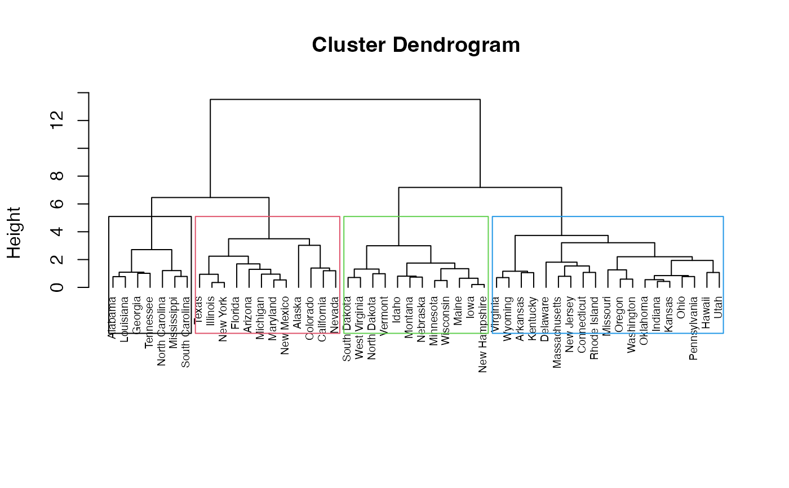
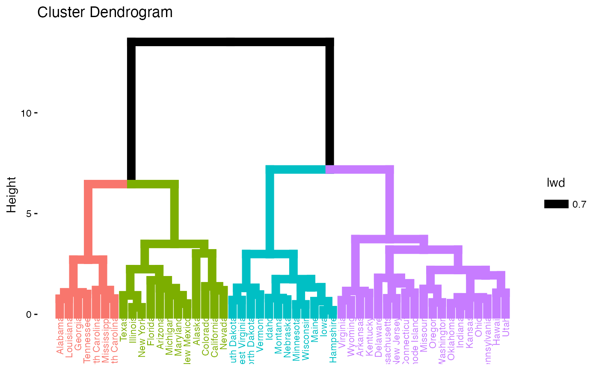
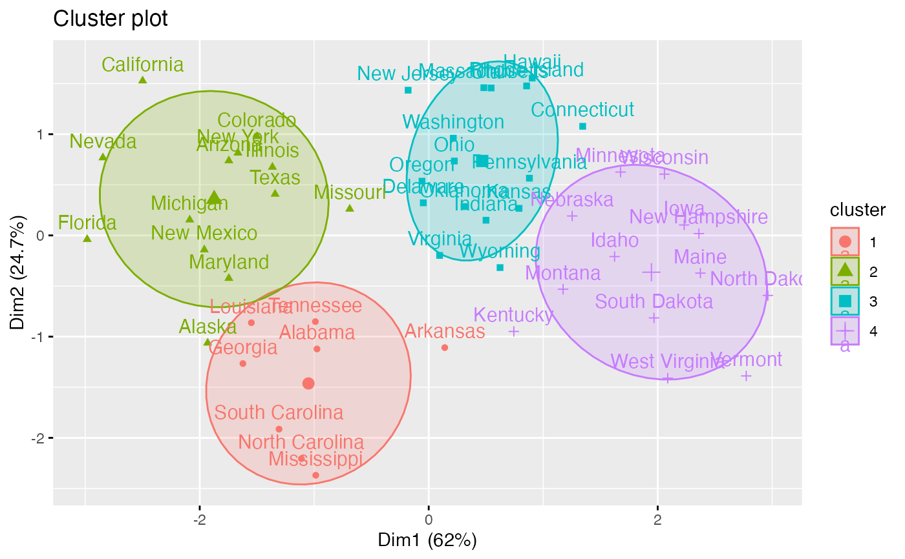

hkmeans.RdThe final k-means clustering solution is very sensitive to the initial random selection of cluster centers. This function provides a solution using an hybrid approach by combining the hierarchical clustering and the k-means methods. The procedure is explained in "Details" section. Read more: Hybrid hierarchical k-means clustering for optimizing clustering outputs.
hkmeans(): compute hierarchical k-means clustering
print.hkmeans(): prints the result of hkmeans
hkmeans_tree(): plots the initial dendrogram
hkmeans(x, k, hc.metric = "euclidean", hc.method = "ward.D2", iter.max = 10, km.algorithm = "Hartigan-Wong") # S3 method for hkmeans print(x, ...) hkmeans_tree(hkmeans, rect.col = NULL, ...)
| x | a numeric matrix, data frame or vector |
|---|---|
| k | the number of clusters to be generated |
| hc.metric | the distance measure to be used. Possible values are "euclidean", "maximum", "manhattan", "canberra", "binary" or "minkowski" (see ?dist). |
| hc.method | the agglomeration method to be used. Possible values include "ward.D", "ward.D2", "single", "complete", "average", "mcquitty", "median"or "centroid" (see ?hclust). |
| iter.max | the maximum number of iterations allowed for k-means. |
| km.algorithm | the algorithm to be used for kmeans (see ?kmeans). |
| ... | others arguments to be passed to the function plot.hclust(); (see ? plot.hclust) |
| hkmeans | an object of class hkmeans (returned by the function hkmeans()) |
| rect.col | Vector with border colors for the rectangles around clusters in dendrogram |
hkmeans returns an object of class "hkmeans" containing the following components:
The elements returned by the standard function kmeans() (see ?kmeans)
data: the data used for the analysis
hclust: an object of class "hclust" generated by the function hclust()
The procedure is as follow:
1. Compute hierarchical clustering
2. Cut the tree in k-clusters
3. compute the center (i.e the mean) of each cluster
4. Do k-means by using the set of cluster centers (defined in step 3) as the initial cluster centers. Optimize the clustering.
This means that the final optimized partitioning obtained at step 4 might be different from the initial partitioning obtained at step 2.
Consider mainly the result displayed by fviz_cluster().
# \donttest{ # Load data data(USArrests) # Scale the data df <- scale(USArrests) # Compute hierarchical k-means clustering res.hk <-hkmeans(df, 4) # Elements returned by hkmeans() names(res.hk)#> [1] "cluster" "centers" "totss" "withinss" "tot.withinss" #> [6] "betweenss" "size" "iter" "ifault" "data" #> [11] "hclust"# Print the results res.hk#> Hierarchical K-means clustering with 4 clusters of sizes 8, 13, 16, 13 #> #> Cluster means: #> Murder Assault UrbanPop Rape #> 1 1.4118898 0.8743346 -0.8145211 0.01927104 #> 2 0.6950701 1.0394414 0.7226370 1.27693964 #> 3 -0.4894375 -0.3826001 0.5758298 -0.26165379 #> 4 -0.9615407 -1.1066010 -0.9301069 -0.96676331 #> #> Clustering vector: #> Alabama Alaska Arizona Arkansas California #> 1 2 2 1 2 #> Colorado Connecticut Delaware Florida Georgia #> 2 3 3 2 1 #> Hawaii Idaho Illinois Indiana Iowa #> 3 4 2 3 4 #> Kansas Kentucky Louisiana Maine Maryland #> 3 4 1 4 2 #> Massachusetts Michigan Minnesota Mississippi Missouri #> 3 2 4 1 2 #> Montana Nebraska Nevada New Hampshire New Jersey #> 4 4 2 4 3 #> New Mexico New York North Carolina North Dakota Ohio #> 2 2 1 4 3 #> Oklahoma Oregon Pennsylvania Rhode Island South Carolina #> 3 3 3 3 1 #> South Dakota Tennessee Texas Utah Vermont #> 4 1 2 3 4 #> Virginia Washington West Virginia Wisconsin Wyoming #> 3 3 4 4 3 #> #> Within cluster sum of squares by cluster: #> [1] 8.316061 19.922437 16.212213 11.952463 #> (between_SS / total_SS = 71.2 %) #> #> Available components: #> #> [1] "cluster" "centers" "totss" "withinss" "tot.withinss" #> [6] "betweenss" "size" "iter" "ifault" "data" #> [11] "hclust"# Visualize the tree hkmeans_tree(res.hk, cex = 0.6)# Visualize the hkmeans final clusters fviz_cluster(res.hk, frame.type = "norm", frame.level = 0.68)#> Warning: argument frame.type is deprecated; please use ellipse.type instead.#> Warning: argument frame.level is deprecated; please use ellipse.level instead.# }